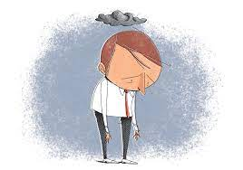
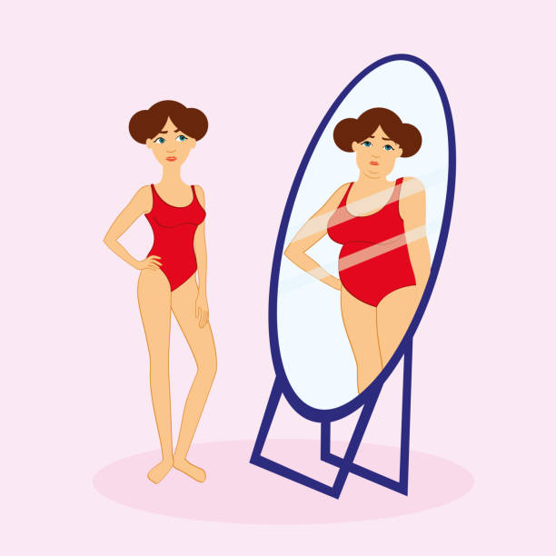

O autismo, cientificamente conhecido como Transtorno do Espectro Autista, é um transtorno no desenvolvimento neurológico da criança que gera alterações na comunicação, dificuldade ou ausência de interação social e mudanças no comportamento, sendo geralmente identificado entre os 12 e 24 meses de idade [...] Saiba mais
BLOG

A depressão é um distúrbio afetivo que acompanha a humanidade ao longo de sua história. No sentido patológico, há presença de tristeza, pessimismo, baixa auto-estima, que aparecem com freqüência e podem combinar-se entre si. [...] Saiba mais

A anorexia nervosa é um transtorno alimentar que faz a pessoa enxergar o próprio corpo de maneira distorcida (em geral, muito acima do peso) e, a partir daí, leva a atitudes de risco como dietas restritivas, abuso de exercícios físicos, indução de vômito para expulsar as refeições e até mesmo uso de medicamentos como laxantes[...] Saiba mais

Bulimia é um transtorno alimentar possivelmente fatal. As pessoas com essa doença têm compulsão por comer. Elas tomam medidas para evitar o ganho de peso. Normalmente, isso significa vômitos (expurgo). No entanto, também pode incluir excesso de exercícios físicos ou jejum. Os tratamentos incluem terapia, medicamentos e educação nutricional[...] Saiba mais